Bem-vindo ao Sistema Logvale de Devoluções — a plataforma web que a Logvale usa para receber, decidir o destino e processar mercadorias devolvidas em nome de seus clientes. Este manual foi escrito para ser fácil: você não precisa ter conhecimento técnico para usá-lo.
Quando uma mercadoria é devolvida, ela passa por três momentos no sistema. Primeiro, um operador da Logvale registra a chegada da devolução (com fotos e dados da nota fiscal). Depois, o cliente dono da mercadoria decide o que fazer com ela. Por fim, o operador executa a decisão. É esse caminho que o sistema organiza, do começo ao fim.
Existem três tipos de usuário. Cada um vê apenas as telas do seu papel — você nunca verá as telas dos outros.
Registra devoluções recebidas, executa as decisões dos clientes (tratativas) e consulta o histórico do que recebeu.
Revisa as devoluções da sua mercadoria, decide o destino de cada uma e informa a chave da NF quando ela faltar.
Cadastra usuários e depositantes, acompanha os indicadores do sistema e gera relatórios.
| Termo | O que significa |
|---|---|
| Devolução | Uma mercadoria que voltou e foi registrada no sistema. |
| Depositante | A empresa (CNPJ) dona da mercadoria armazenada na Logvale. |
| RV | Etiqueta com código de barras colada na caixa, usada para identificar a devolução rapidamente. |
| Chave de Acesso | Número de 44 dígitos que identifica a nota fiscal (NF-e). |
| NF de origem | A nota fiscal de venda do depositante, que acompanha a mercadoria. O sistema guarda apenas a chave de acesso dela, não o arquivo. |
| NF de devolução | A nota fiscal que o cliente emite para a devolução. O XML dela é anexado na decisão (Estoque e Retirada). |
| XML | O arquivo digital de uma nota fiscal. |
| DANFE | A versão em PDF da nota fiscal, pronta para visualizar e imprimir. |
| Tratativa | A execução, pelo operador, da decisão tomada pelo cliente. |
| Auto-decisão | Decisão tomada automaticamente pelo sistema quando o cliente não responde em 72 horas (não vale para depositantes sem prazo de decisão). |
Acesse o endereço do sistema. Na tela "Acesso ao Sistema", informe seu e-mail e sua senha e clique em Entrar. O sistema leva você direto para a tela do seu perfil.
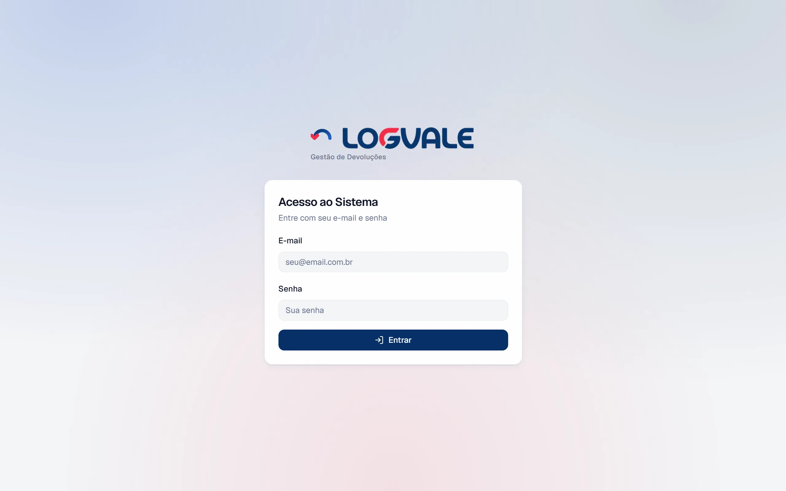
Se é a sua primeira vez, o gerente da Logvale envia a você um link de acesso (por e-mail, WhatsApp ou outro meio). Ao abrir o link, você verá a tela "Bem-vindo ao Logvale", onde precisa:
A partir daí, você entra sempre com e-mail e senha.
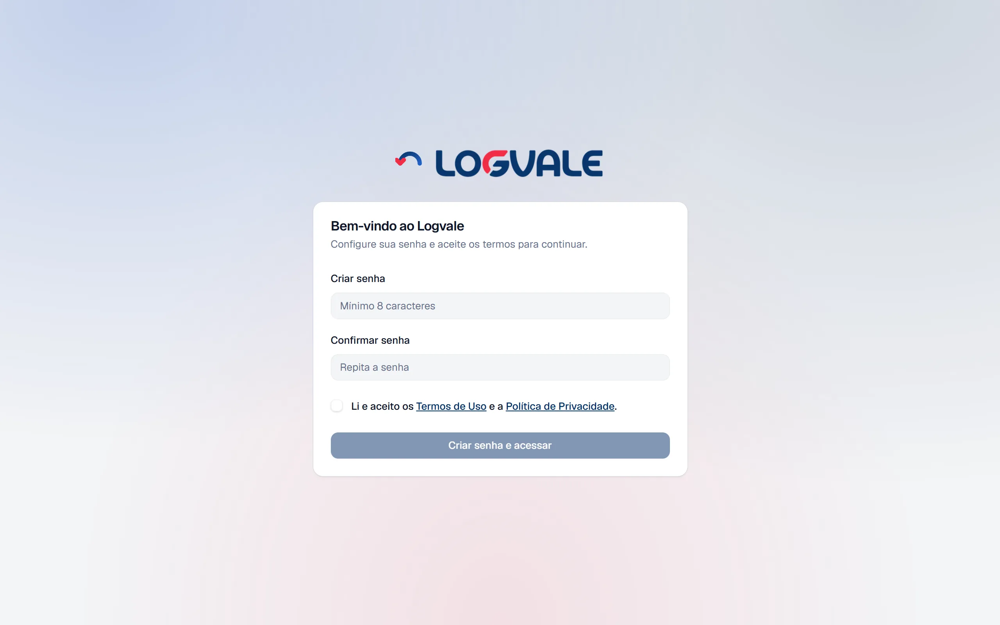
Esta parte mostra, em uma página por perfil, o caminho mais comum de cada usuário. Para os detalhes, consulte as Partes 2, 3 e 4.
Esta parte é para o funcionário da Logvale que recebe as devoluções e executa as decisões dos clientes.
Ao entrar, você vê uma saudação e três indicadores rápidos: Hoje e Esta semana (recebimentos feitos) e Tratativas (pendentes). Abaixo, três cartões levam às operações: Novo Recebimento, Tratativas e Minhas Devoluções. Há ainda uma lista das tratativas pendentes mais antigas.
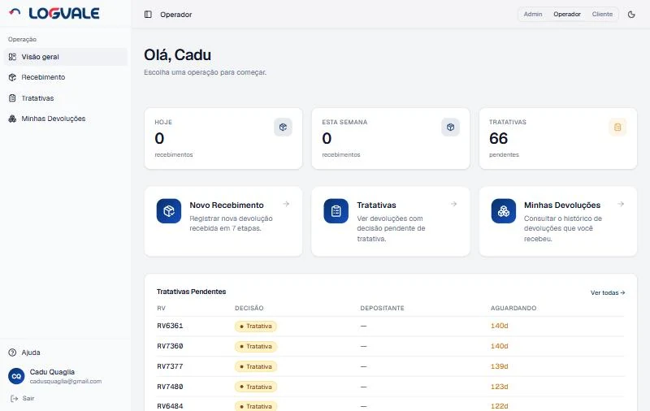
O registro de uma devolução acontece em sete etapas. Uma barra de progresso ("Etapa X de 7") mostra onde você está. Você pode usar o botão Voltar a qualquer momento sem perder o que já preencheu. O botão Cancelar (no topo) descarta o recebimento — o sistema pede confirmação antes.
A etapa começa com a pergunta "Escolha qual código da caixa você vai bipar" e três opções, da mais completa para a mais simples:
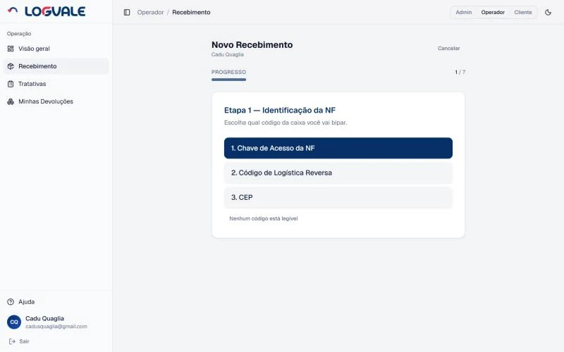
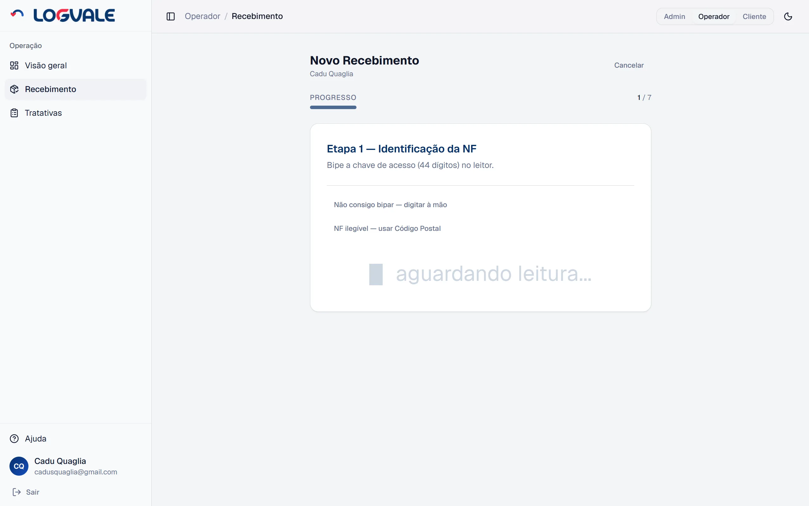
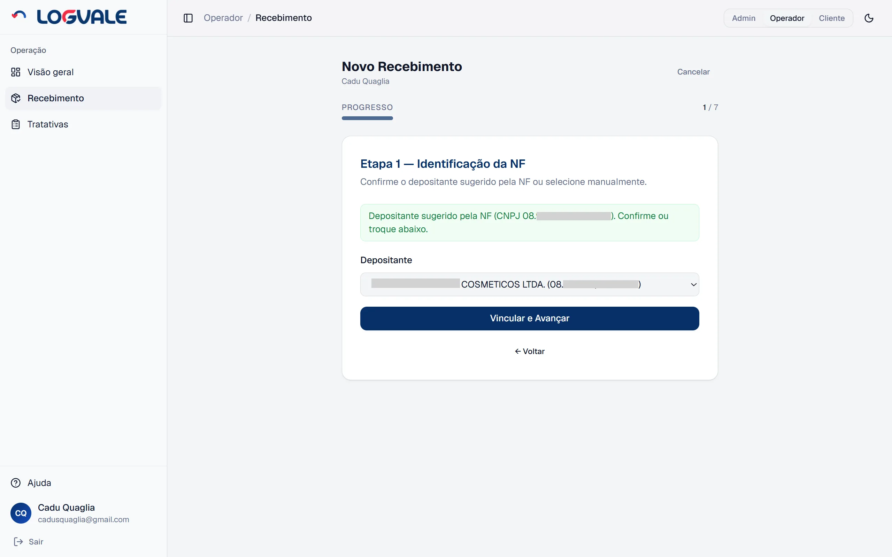
Bipe o código de barras da RV colada na caixa. Se preferir, clique em "Não consigo bipar — digitar à mão" e informe o código.
Informe a quantidade de itens da caixa e escolha o estado dos produtos (obrigatório — nada vem marcado):
Clique em Próximo (ou tecle Enter).
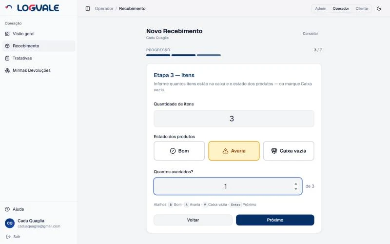
Use a webcam para capturar de 1 a 4 fotos da caixa. Pressionar a tecla Enter dispara a foto. Cada foto aparece em miniatura; passe o mouse e clique no ✕ para descartar. O botão Próximo só libera com pelo menos 1 foto.
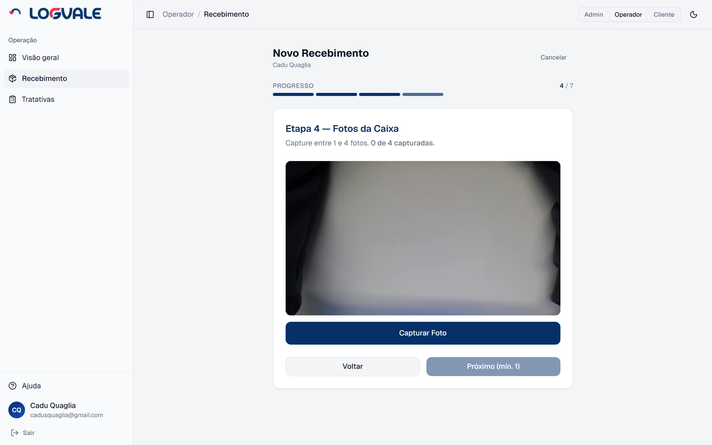
Mesma mecânica da etapa anterior, agora com 1 a 5 fotos dos itens. Se você marcou Caixa vazia, esta etapa não aparece.
O sistema mostra um resumo de tudo: identificador (com CNPJ e número da NF, quando lidos da chave), depositante, RV, itens (quantidade e estado — por exemplo, "3 itens · Avaria (1 de 3)" ou "Caixa vazia") e as fotos. Cada bloco tem um botão Editar que leva de volta à etapa correspondente. Conferindo tudo, clique em Confirmar e Registrar.
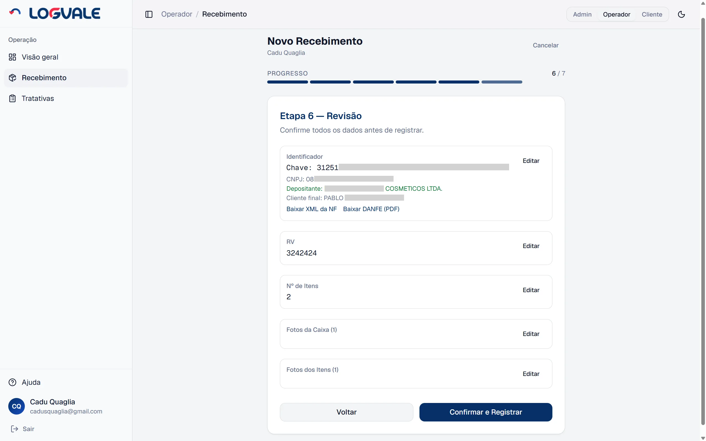
O sistema envia as fotos e registra a devolução. Ao final, aparece a mensagem "Recebimento registrado!" e você volta automaticamente ao início, pronto para o próximo.
A tela de Tratativas lista as devoluções que já foram decididas pelo cliente e aguardam execução. O campo de busca já vem com o cursor ativo: basta bipar a RV da caixa que a devolução aparece. Um contador mostra quantas tratativas estão pendentes.
Cada linha mostra a RV, a decisão (com a etiqueta Auto quando foi automática), a data da decisão, o depositante e o cliente. Clique em Ver detalhes para abrir as informações (depositante, nº de itens, estado dos produtos, datas), o identificador e as fotos, e então em Concluir para finalizar. A devolução sai da lista.
Nos detalhes também ficam os arquivos que o cliente anexou na decisão, prontos para baixar: o XML da NF de devolução (Estoque e Retirada) ou, no Reenvio, a etiqueta e o DANFE em PDF — necessários para despachar o pedido de novo. Os arquivos são salvos no computador já com o nome da RV.
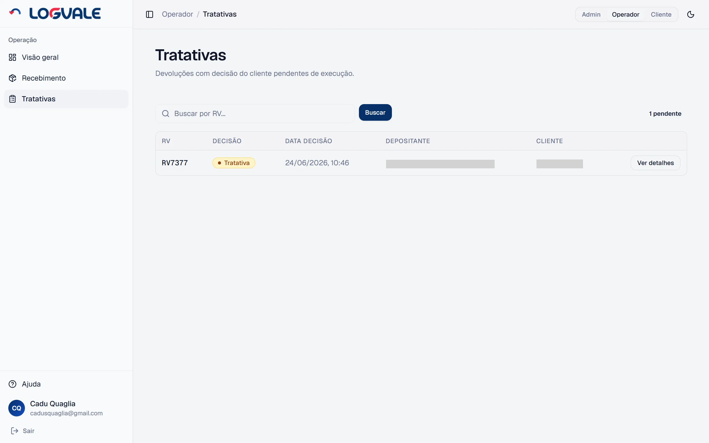
Em Minhas Devoluções você consulta todas as devoluções que você recebeu, em qualquer status — é só leitura, nada é alterado aqui. A lista mostra RV, data, status, decisão, depositante e itens.
| Situação | O que fazer |
|---|---|
| O leitor não bipa | Use a opção "digitar à mão" na etapa em questão. |
| A caixa não tem NF | Na Etapa 1, use o Código de Logística Reversa ou o CEP; sem nenhum código legível, use "Nenhum código está legível". |
| A caixa chegou sem itens | Na Etapa 3, marque Caixa vazia (atalho V). Só as fotos da caixa são pedidas. |
| Foto ficou ruim | Clique no ✕ da miniatura e capture outra. |
| Bipei a NF errada | Use Cancelar (descarta tudo) ou volte e edite na Revisão. |
Esta parte é para a empresa depositante que decide o destino das suas devoluções. Você pode usar pelo computador ou pelo celular.
Ao entrar, você vê a tela Devoluções Pendentes: todas as devoluções da sua mercadoria que aguardam decisão. No topo há um aviso lembrando da regra das 72 horas (ele não aparece para depositantes sem prazo de decisão — veja a seção 3.6). Você pode filtrar por depositante (quando você tem mais de um) e por data (De / Até). Um selo mostra o total de devoluções.
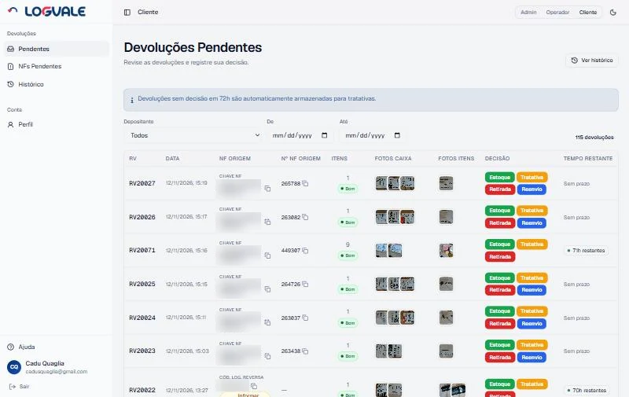
| Coluna | O que mostra |
|---|---|
| RV | O código da etiqueta da caixa. |
| Data | Quando a devolução foi recebida. |
| NF Origem | A chave de acesso da NF de venda (com botão para copiar). Se a devolução chegou sem a chave, mostra o código usado no recebimento (CEP, Cód. Log. Reversa ou Ilegível) e o botão Informar chave — veja a seção 3.8. Quando houver, aparece também o nome do cliente final. |
| Nº NF Origem | O número da NF de venda, tirado da própria chave (com botão para copiar). Mostra "—" enquanto não houver chave. |
| NF Devolução | Só no Histórico: o XML da NF de devolução que você anexou ou, no Reenvio, a etiqueta e o DANFE. Clique para baixar. |
| Itens | Quantidade de itens e o estado dos produtos informado no recebimento: Bom, Avaria (ex.: "Avaria 1/3" = 1 avariado de 3) ou Caixa vazia. |
| Fotos Caixa / Fotos Itens | Miniaturas — clique para abrir a galeria. |
| Decisão | Os botões coloridos para você escolher o destino. |
| Tempo Restante | Contagem regressiva até a auto-decisão (72h), ou "Sem prazo" para depositantes sem prazo de decisão. |
Clique em qualquer miniatura para abrir a galeria em tela cheia. Use as setas para navegar entre as fotos e o ✕ para fechar. As fotos ajudam você a avaliar o estado da mercadoria antes de decidir.
Para cada devolução, você escolhe um destino:
| Decisão | O que acontece | O que anexar |
|---|---|---|
| Estoque | Produto avaliado como saudável e em condições de revenda. Será reintegrado ao estoque disponível para venda imediata. | XML da NF de devolução |
| Tratativa | O produto vai para uma área segregada no galpão, para tratativas futuras. Procure o departamento comercial da Logvale para definir os próximos passos. | Nada |
| Retirada | O produto ficará disponível para retirada pelo cliente. Os termos, prazos e condições da retirada são negociados diretamente com o comercial da Logvale. | XML da NF de devolução |
| Reenvio | O mesmo pedido é reenviado ao cliente final com a mesma NF do pedido original. A Logvale despacha com a etiqueta que você anexar. Só aparece para depositantes habilitados. | Etiqueta de reenvio e DANFE, em PDF (até 5 MB cada) |
Decidir tem dois cliques, de propósito, para evitar enganos:
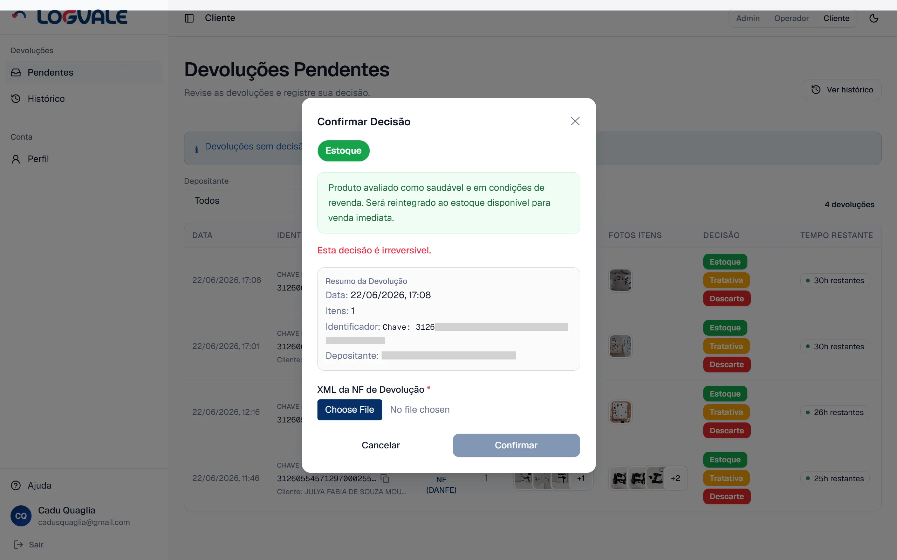
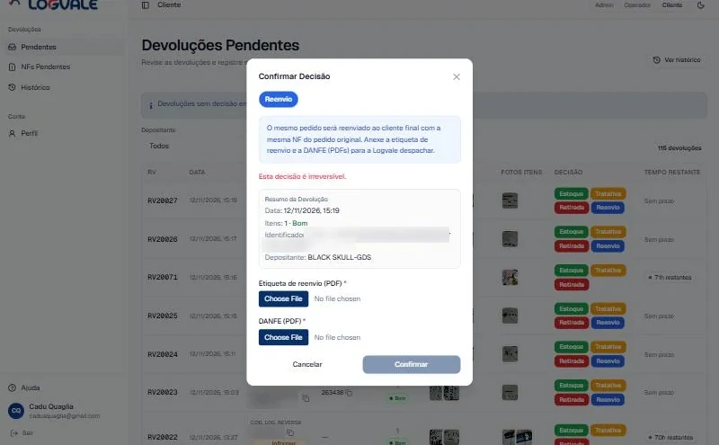
Em Histórico você encontra todas as devoluções já decididas, com a decisão tomada e a data. Decisões automáticas trazem a etiqueta Auto. Os mesmos filtros de depositante e data estão disponíveis. A coluna NF Devolução permite baixar o que você anexou na decisão (XML da NF de devolução, ou etiqueta e DANFE do Reenvio).
O botão Exportar XLSX baixa uma planilha com todo o seu histórico (data, RV, NF Origem, NF Devolução, depositante, cliente final, itens, decisão, quem decidiu, data da decisão e status). As colunas NF Origem e NF Devolução trazem a chave de acesso de cada nota.
Quando a caixa chega sem a nota fiscal legível, o operador registra a devolução pelo Código de Logística Reversa, pelo CEP ou como Ilegível. Nesses casos falta a chave de acesso da NF de origem (a sua NF de venda), e cabe a você informá-la.
A tela NFs Pendentes (no menu, entre Pendentes e Histórico) lista essas devoluções, das mais antigas para as mais novas, em dois grupos:
Cada cartão mostra a RV, a data de recebimento, os itens, o depositante e as fotos. Digite os 44 dígitos da chave no campo e clique em Salvar chave. O mesmo pode ser feito direto na tabela de pendentes ou do histórico, pelo botão Informar chave na coluna NF Origem.
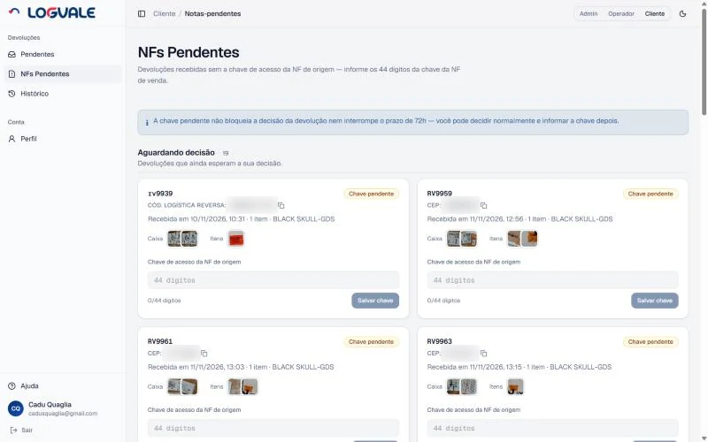
Em Meu Perfil você vê seus dados pessoais (nome, e-mail, telefone) e os depositantes vinculados à sua conta — tudo em modo leitura. Para alterar qualquer dado, fale com o gerente. Há também o botão Sair.
| Pergunta | Resposta |
|---|---|
| Perdi o prazo de 72h, e agora? | O sistema já encaminhou para Tratativa. Fale com o comercial da Logvale para os próximos passos. |
| Qual XML devo anexar? | O XML da nota fiscal de devolução emitida por você (exigido em Estoque e Retirada). |
| Onde baixo o XML ou o DANFE da NF de origem? | O sistema guarda apenas a chave de acesso da NF de origem, não o arquivo. Copie a chave (ou o Nº NF Origem) na tabela para localizar a nota no seu sistema. |
| Apareceu "Informar chave" na devolução | A caixa chegou sem a NF legível. Informe a chave da sua NF de venda em NFs Pendentes — isso não impede a decisão. |
| Não vejo o botão Reenvio | O Reenvio só aparece para depositantes habilitados. Fale com o comercial da Logvale. |
| Posso desfazer uma decisão? | Não. A decisão é irreversível; em caso de erro, contate o suporte. |
| Esqueci minha senha | Solicite ao gerente da Logvale; ele dispara para o seu e-mail um link de redefinição de senha. Não existe "esqueci minha senha" na tela de login. |
Esta parte é para o administrador da Logvale, responsável por cadastros e pelo acompanhamento do sistema.
A tela inicial do gerente reúne os principais indicadores em cartões:
Abaixo, há gráficos por status e por decisão, a lista dos top clientes por volume e as pendentes urgentes, com link direto para cada devolução.
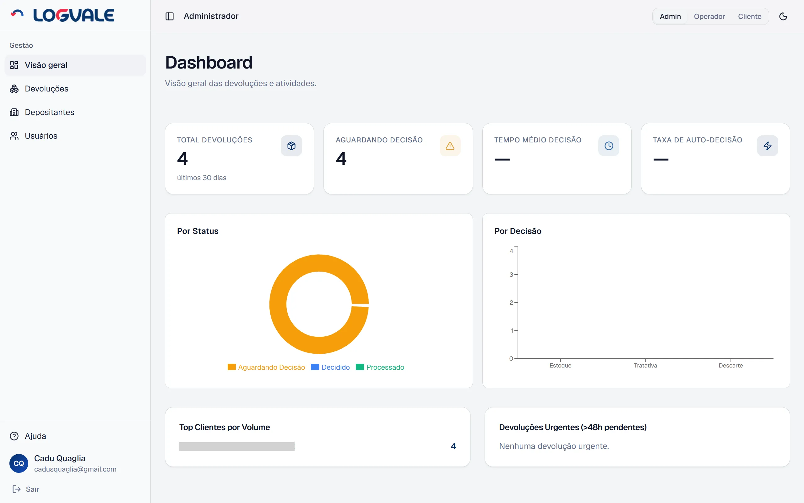
Em Usuários você gerencia operadores, clientes e gerentes. É possível filtrar por perfil. As ações disponíveis:
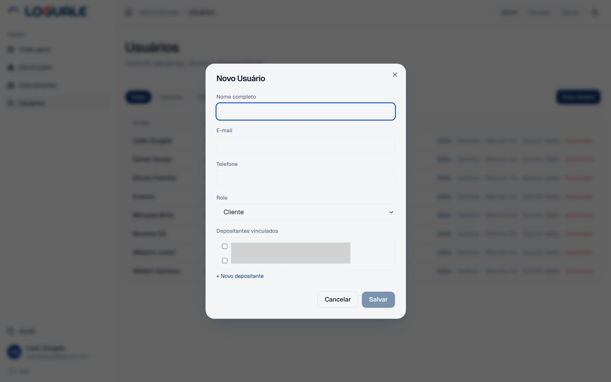
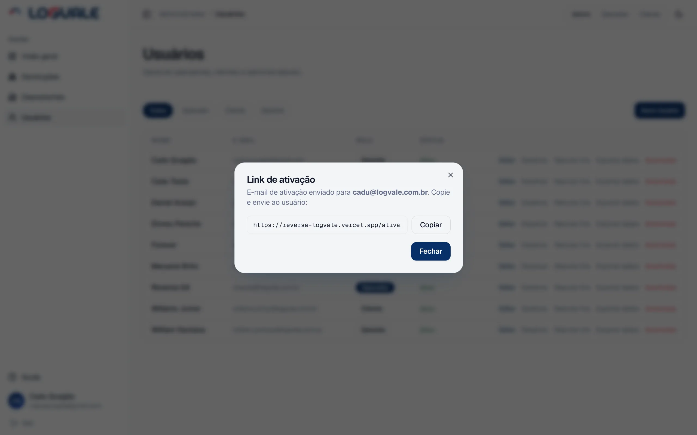
Em Depositantes você cadastra e edita as empresas (CNPJ + razão social) e vê quais clientes estão vinculados a cada uma.
Em Devoluções você consulta todas as devoluções do sistema. É possível buscar por RV e filtrar por status (aguardando decisão, decidido ou processado), para acompanhar qualquer item do início ao fim.
Os detalhes de cada devolução mostram depositante, itens e estado dos produtos, cliente final, operador que recebeu, datas (recebimento, decisão, processamento), o identificador, as fotos e os arquivos anexados pelo cliente (XML da NF de devolução, ou etiqueta e DANFE do Reenvio), para baixar.
Em Relatórios você gera o relatório de devoluções em planilha (XLSX). Escolha:
Clique em Gerar relatório e a planilha é baixada. As devoluções entram pela data de recebimento, sempre no horário de Brasília. A planilha tem as abas:
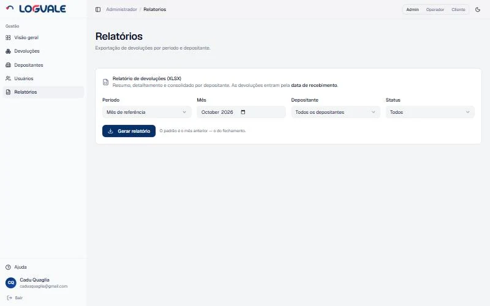
As ações de Exportar dados e Anonimizar (na tela de Usuários) atendem aos direitos previstos na LGPD. A anonimização preserva apenas os dados fiscais exigidos por lei. Consulte também a Política de Privacidade e os Termos de Uso (Parte 5.7).
↑ Voltar ao topo| Decisão | Significado | Anexo exigido | Reversível? |
|---|---|---|---|
| Estoque | Volta ao estoque para venda | XML da NF de devolução | Não |
| Tratativa | Área segregada; tratar com o comercial | Nenhum | Não |
| Retirada | Produto disponível para retirada (termos com o comercial) | XML da NF de devolução | Não |
| Reenvio | Mesmo pedido reenviado ao cliente final, com a mesma NF (só depositantes habilitados) | Etiqueta de reenvio + DANFE (PDF) | Não |
Aguardando decisão: recebimento concluído pelo operador, aguardando o cliente. Decidido: o cliente (ou o sistema, após 72h — exceto para depositantes sem prazo) escolheu o destino; aguarda a tratativa. Processado: o operador concluiu a tratativa.
| Prazo | O que acontece |
|---|---|
| 48 horas sem decisão | O sistema envia um e-mail de aviso ao cliente. |
| 72 horas sem decisão | O sistema decide automaticamente por Tratativa (etiqueta "Auto"). |
| Termo | Significado |
|---|---|
| Auto-decisão | Decisão tomada pelo sistema após 72h sem resposta do cliente (vira Tratativa). Não vale para depositantes sem prazo de decisão. |
| Avaria | Estado dos produtos quando algum item chegou avariado; o operador informa quantos. |
| Caixa vazia | Caixa recebida sem nenhum item (0 itens); só a caixa é fotografada. |
| CEP / Código Postal | Identificador alternativo usado quando a NF está ilegível. |
| Chave de Acesso | Número de 44 dígitos que identifica a NF-e. |
| Código de Logística Reversa | Código de logística reversa do cliente, impresso na caixa; identificador alternativo quando a caixa não traz a NF. |
| DANFE | Documento Auxiliar da NF-e — a versão em PDF da nota, para visualizar e imprimir. |
| Depositante | Empresa (CNPJ) dona da mercadoria armazenada na Logvale. |
| Devolução | Mercadoria devolvida registrada no sistema. |
| Estado dos produtos | Bom, Avaria ou Caixa vazia — informado pelo operador na Etapa 3; é só informativo. |
| Ilegível | Estado quando nenhum código (NF, código de logística reversa ou CEP) pôde ser lido; o sistema gera um identificador próprio. |
| NF / NF-e | Nota fiscal eletrônica. |
| NF de devolução | NF emitida pelo cliente para a devolução; o XML é anexado nas decisões Estoque e Retirada. |
| NF de origem | NF de venda do depositante; o sistema guarda só a chave de acesso dela. |
| Reembalagem | Destino interno em que o produto é reembalado; não disponível como botão ao cliente. |
| Reenvio | Decisão (só para depositantes habilitados) em que o mesmo pedido é reenviado ao cliente final com a mesma NF. |
| RV | Etiqueta com código de barras colada na caixa. |
| Tratativa | Execução, pelo operador, da decisão do cliente. |
| XML | Arquivo digital da nota fiscal. |
Precisa de ajuda? Fale com a Logvale:
O sistema respeita a Lei Geral de Proteção de Dados. Você pode solicitar o acesso, a exportação e a anonimização dos seus dados pessoais (atendidos pelo gerente). Os documentos oficiais estão disponíveis no próprio sistema:
/privacidade/termos